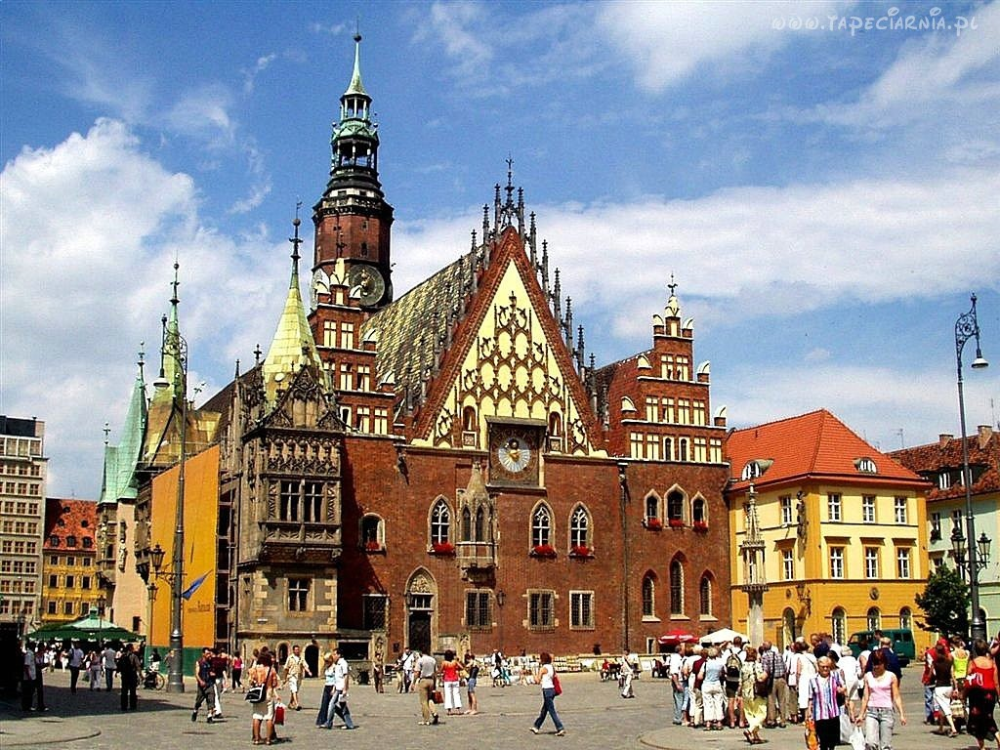

Poznaj wrocławskie krasnale
Gaviusz
Gaviusz to krasnal instalator (hydraulik). Zajmuje się kotłami, prysznicami i … grzejnikami. W szczególności tymi marki GAVIA. Usadowił się tuż obok siedziby firmy Instal-Konsorcjum, która jest właścicielem marki Gavia.
Kolekcjoner
Kolekcjoner jako dziecko zbierał kapsle. Gdy dorósł, postanowił jednak zająć się czymś poważniejszym. Wybór padł na monety. Przyznajmy – miał nosa, bo to dobra lokata kapitału w czasie kryzysu, który niestety dotknął też świat krasnali. Teraz siedzi na 4 piętrze DH Feniks i ogląda przez lupę swoje cenne zbiory.
Suvenirek
Kolejny mały psotnik, który zamieszkał w naszym mieście – na imię mu Suvenirek, a zamieszkał na wrocławskim Rynku przy sklepie z pamiątkami znajdującym się naprzeciw wrocławskiej fontanny.
Barduś
Jego imię nawiązuje do niezwykłej postaci, o której Barduś przypomina wszystkim, którzy go zobaczą. Tym kimś jest Jacek Kaczmarski, przy którego ulicy zasiada zwykle Barduś.

Pożarki
Pożarkom niestraszny ogień. W pełnej gotowości, z gaśniczym wężem i drabiną czekają na wezwanie. Czuwają w okolicy Kościoła Garnizonowego – upamiętniając w ten sposób trzy dramatyczne pożary tej budowli. Oby najmniejsi strażacy Wrocławia nie musieli interweniować zbyt często!
Skryba
Skryba jest trochę sentymentalny i anachroniczny. W epoce laptopów, komórek i innych nowinek technicznych on nadal upiera się przy swoim gęsim piórze. Z tęsknotą wspomina kałamarze i kleksy atramentu. Przy tym dobrze wie, że najważniejsze jest, by pisać mądrze i bez błędów – warto o tym pamiętać.
Pierożnik
Smakosz i miłośnik dobrego jedzenia. Ponad wszystkie frykasy przedkłada talerz gorących, tłusto okraszonych ruskich z cebulką. Ponieważ bez umiaru folguje swoim kulinarnym zachciankom, błogi i leniwy uśmiech nie schodzi z jego twarzy. Bez wątpienia jeden z najszczęśliwszych krasnali na Dolnym Śląsku.
OddLudek
Czy OddLudek jest odludkiem? Nic bardziej mylnego. To prawdziwy filantrop, symbol Stowarzyszenia Bratniej Pomocy „Odd Fellows”. Spotkacie go w Parku Staromiejskim. Łańcuch, który trzyma to znak wspólnoty i wzajemnej pomocy potrzebującym.
- Michael Jackson przyjeżdża do Wrocławia!
- Wybudują nowe drogi rowerowe
- Artykuł na inny temat
- Wybudują nowe drogi rowerowe
- Artykuł na jeszcze inny temat
- Wybudują nowe drogi rowerowe
<Ratusz>
<Widok na Most Zwierzyniecki>

| Ogłoszenia | |
|---|---|
 |
Sprzedam kotka |
| Kupię kotka | |
| Zamienię telewizor na zmywarkę | |
| Kupię ciągnik | |
| Korepetycje z chińskiego |
Dla studentow
Ściągnij książkęŚciągnij przewodnik po Wrocławiu po angielsku
- Znajdź pracę --> P.R.A.C.A
- Japoński noblista we Wrocławiu:
- Komitet Noblowski opisał tegoroczną nagrodę z fizyki pięknym hasłem: „Za nowe światło, które rozświetliło świat”.
- Nagrodę otrzymali:
- Isamu Akasaki
- Hiroshi Amano
- Shuji Nakamura
- Troje nowych profesorow belwederskich:
- prof. Henryk Bujak (Uniwersytet Przyrodniczy)
- prof. Grażyna Gościniak (Uniwersytet Medyczny)
- prof. Dariusz Janczak (Uniwersytet Medyczny)